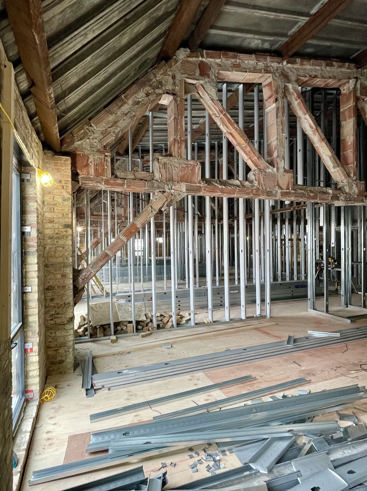

Metal Stud Framing
Structural precision. Complex assemblies. Chicago-area commercial framing backed by 20+ years of real-world expertise.
Structural precision. Complex assemblies. Chicago-area commercial framing backed by 20+ years of real-world expertise.
Metal stud framing is the structural backbone of commercial interiors — and getting it right from the start determines whether everything above and around it performs properly. At The Edge Construction Co., framing isn't a commodity task. It's a craft we've spent over two decades perfecting across hundreds of Chicago-area projects.
We handle every scope from straightforward interior partitions to complex multi-story structural assemblies, curved walls, tall-wall systems, and curtain wall backup framing. Every job begins with precision laser layout, ensuring alignment that downstream trades depend on. All framing work meets or exceeds ASTM C955 steel framing standards and applicable International Building Code requirements.
Request a Framing BidPrecision Laser Layout
Every project starts with rotary laser equipment — accurate to fractions of an inch for stud placement, alignment, and elevation.
BIM Coordination
We integrate with project BIM models to coordinate framing with structural, MEP, and architectural disciplines before hitting the field.
Complex Assemblies
Curved walls, tall-wall systems, angled assemblies, and curtain wall backup — we frame what other contractors avoid.
Schedule-Driven
Real-time project management tools keep our crew, your GC, and the overall schedule fully aligned — no surprises.
How We Work
From pre-bid coordination to final inspection, every step is deliberate.
We review plans, RFIs, and BIM models early to identify scope conflicts, sequencing challenges, and value engineering opportunities before bidding.
Precision rotary laser establishes control points, stud lines, and column centerlines — the foundation every downstream trade depends on.
Our experienced crews execute the framing scope with tight daily tracking against schedule. Complex assemblies are pre-planned and reviewed before crews mobilize.
Completed framing is inspected against approved drawings before handoff to drywall, MEP, and finish trades — reducing RFIs and field changes downstream.
Project Photos



Common Questions
Commercial metal stud framing uses light gauge steel studs and tracks to create structural walls, partitions, and assemblies inside commercial buildings. It's faster, stronger, and more dimensionally stable than wood framing, making it the industry standard for commercial interiors, high-rises, and multi-family construction.
Every project begins with professional-grade rotary laser equipment to establish control points, stud lines, and elevation benchmarks accurate to fractions of an inch. This eliminates costly rework from misaligned framing, ensures ceiling systems and curtain wall assemblies seat properly, and gives downstream trades a reliable reference throughout construction.
Yes. We specialize in complex framing that many contractors pass on — including curved walls, angled assemblies, tall-wall systems exceeding 20 feet, curtain wall backup framing, and multi-story structural systems. Our projects include a 1926 historic theater conversion and curved exterior framing on commercial buildings.
Absolutely. We integrate with project BIM models and coordinate directly with structural, MEP, and architectural teams before mobilizing. Our project management software keeps all parties aligned in real time, catching conflicts before they cause expensive field changes.
We serve the entire greater Chicago metropolitan area including the City of Chicago, the North Shore, western suburbs (Bartlett, Elgin, Naperville, Schaumburg), southern suburbs, and the broader Chicagoland region. Our office is located in Bartlett, IL.